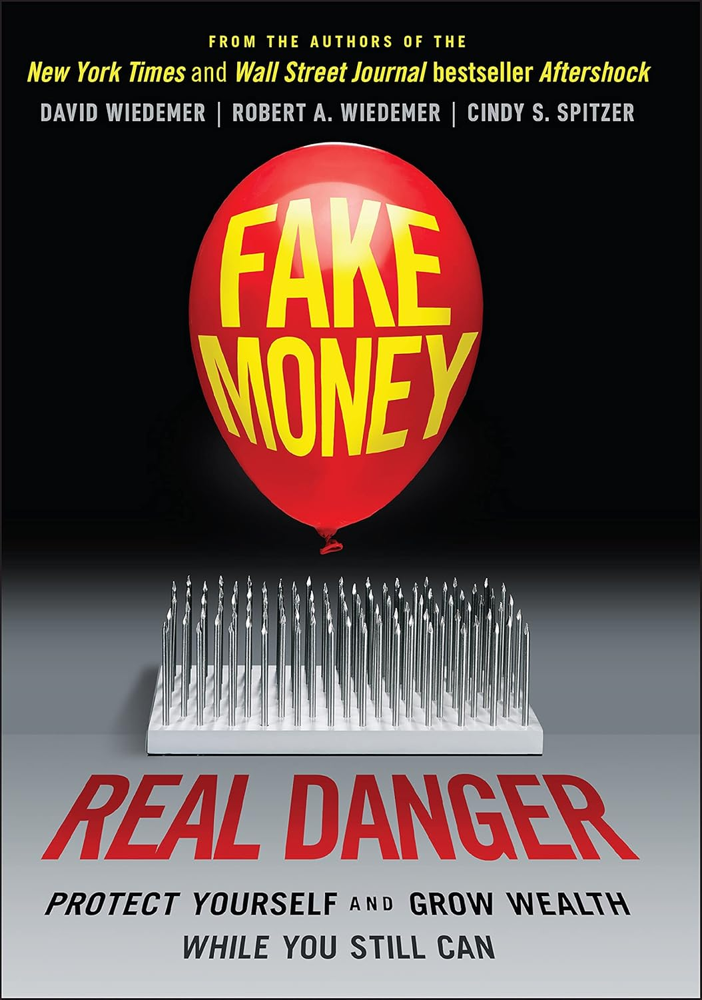
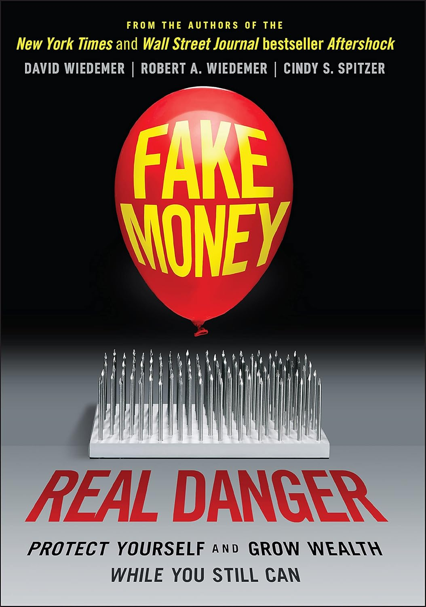

Award-winning Writer / Book Development & Editing / Consulting & Coaching
Aftershock: Protect Yourself and Profit in the Next Global Financial Meltdown
The Aftershock Investor: A Crash Course in Staying Afloat in a Sinking Economy
David Wiedemer: "I want to thank my coauthors Bob and Cindy, for being indispensible"
Robert Wiedemer: "My gratitude goes to Dave Wiedemer and Cindy Spitzer for being, quite clearly, the best collaborators you could ever have."
“To Cindy spitzer, who wrote and edited several of the most important stories in this book. Cindy, your contribution was invaluable”
“Talented writer and gem of a human being, Cindy Spitzer took my beginnings and endings and made the middle - actually the entire book - so much better than I could have alone.”
“As a new author with some small knowledge about how to actively manage portfolios, and no knowledge of how to write a book, it may have been an act of Divine Providence that early in the process I met Cindy Spitzer and somehow knew she was the right person to edit the book.”
"I think my editor Cindy Spitzer. You were full of kind and encouraging words for a year before editing started and all the way through publication. You were often much-needed wind in my sails. Your editing made this a better book, and I am especially grateful for your help presenting the most sensitive material in a good way."